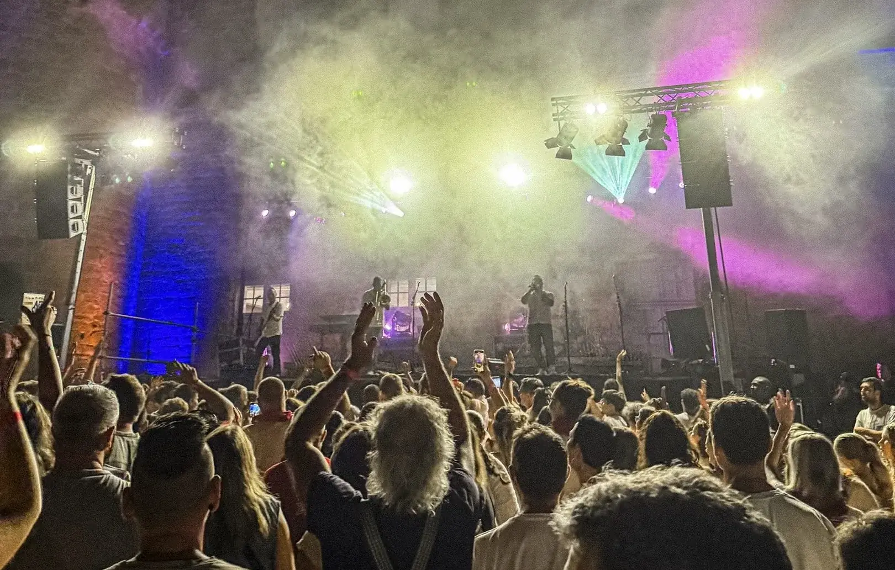

<!-- ─────────────────────────────────────────────────────────────
     SAUVEGARDE HERO PHOTO — état avant intégration vidéo hero
     Pour restaurer : remplace le bloc <div class="hero-pin__photo">
     dans index.html par ce contenu.
     Preload à remettre dans <head> :
       <link rel="preload" as="image" href="assets/photos/photo-hero.webp"
             imagesrcset="assets/photos/photo-hero-700.webp 700w, assets/photos/photo-hero.webp 1620w"
             imagesizes="100vw" type="image/webp">
───────────────────────────────────────────────────────────── -->

        <!-- Photo révélée derrière les rideaux -->
        <div class="hero-pin__photo" aria-hidden="true">
          <picture>
          <source type="image/webp"
            srcset="assets/photos/photo-hero-700.webp 700w, assets/photos/photo-hero.webp 1620w"
            sizes="100vw">
          
        </picture>
          <div class="hero-pin__photo-overlay"></div>
        </div>
